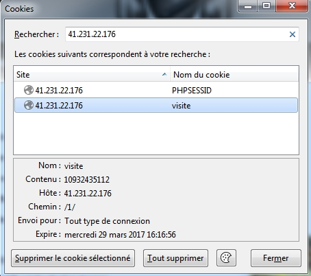
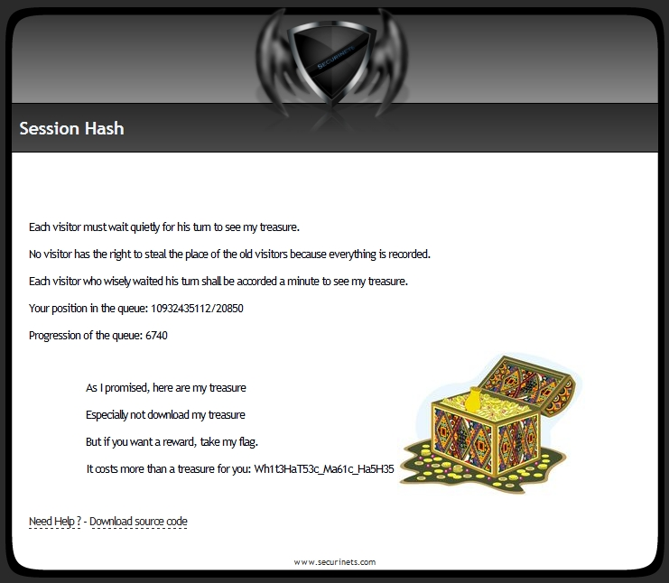

View the Project on GitHub ctfsecurinets/ctf-securinets-quals-2016
If we see in this task, the progression of the queue must be equal to the position of the queue.
And in this example, the progression of the queue .
Comme on voit dans cette épreuve, la progression de la file d'attente doit être égale à la position de la file.
Et dans cet exemple, la valeur de la progression est trop loin de la valeur de la position.
La progression avance chaque minute.
Dans le code donné dans la page index.phps, il n'y a pas le code de progression.
Donc on ne peut pas agir sur la valeur de la progression.
Par contre si on comprend bien le code, on trouve que chaque nouvel visiteur aura une nouvelle cookie PHPSESSID qui sera enregistrée dans la base de donnée. L'ID auto-incrémenté de cette saisie, sera enregistré dans la cookie "visite". Après, le code va créer un hash en sha1 à partir de l'ID sauvegardé dans "visite".
Maintenant si le visiteur est ancien, le code va créer le hash shah1 de l'ID visite s'il a été changé manuellement. Puis il va vérifier dans la base de données s'il existe une ligne associée à la fois à cet ID et à la valeur du cookie PHPSESSID pour éviter le vol des ID des anciens visiteurs. Comme ça on pourra s'assurer qu'il y a un seul visiteur qui a cet ID.
Si on a trouvé que ce visiteur a un ID visite valide (PHPSESSID existe dans la base de données), alors rien ne se passe. Sinon, le visiteur a changé l'ID visite du cookie manuellement, donc on vérifie s'il a essayé de voler un ancien ID. S'il l'a volé, réinitialise son cookie visite avec une nouvelle valeur. Sinon ça ne dérange pas le code tant qu'il a mi une valeur de l'ID visite très grande donc il va retarder son tour. Dans ce cas, on sauvegarde son PHPSESSID dans la base de données encore avec un ID auto-incrémenté.
On remarque qu'il y a une faute dans cette dernière partie, c'est que même si l'utilisateur met un ID visite très grand par rapport à la valeur actuelle de l’auto-incrément dans la base de données, l'ID qui sera enregistré sera celui de l’auto-incrément et non pas de l'ID saisi dans la cookie visite. Exemple: Si le visiteur a changé la cookie visite comme suit: "$_COOKIE["visite"]=10000000000;" et la valeur maximale de la file d'attente est 30000, la nouvelle ligne ajoutée dans la base de données aura pour ID=30001 et non pas 10000000000. Donc s'il y a un ID visite très grand qui nous permet de bypasser la file d'attente, il n'y aura aucun problème que plusieurs participants du CTF puissent le prendre.
Revenons au code. Après toutes ces vérifications, on remarque que pour un nouveau visiteur ou un ancien visiteur, tous les deux auront un ID visite dans cette page. Et à la fin, on vérifie si le hash sha1 de l'ID session est égal à zéro. Si vous remarquez, lorsque le code a trouvé un ancien visiteur, et lorsqu'il a vérifié dans la base de donnée si son PHPSESSID existe, et quand il s'est assuré qu'il est bien un utilisateur valide, il a trouvé l'opportunité de vérifier si son tour est arrivé ou non (ID visite égal à la valeur de la progression).
Dans ce cas on met la valeur du hash à zéro puisque le créateur de ce site n'aime pas manipuler les entiers (ID visite).
Par contre d'après lui, un hash ne peut pas être équivalent à zéro.
C'est là que vient l'astuce de réfléchir s'il existe réellement un hash sha1 non vide (à 40 caractères) et qui est équivalent à zéro.
Lorsqu'on regarde cet article écrit par WhiteHatSec: https://www.whitehatsec.com/blog/magic-hashes/
On trouve qu'il y a des chiffres qui donnent un hash équivalent à zéro. Ces hash ont une caractéristique spéciale: ils commencent avec "0e".
Et puisque le chiffre "10932435112" est très grand donne un hash "0e07766915004133176347055865026311692244", alors on pourra s'assurer que $_SESSION["visite"]=="0" est vrai.
Passons en pratique, on va injecter l'ID 10932435112 dans la cookie visite sous Firefox avec "Cookies Manager +" et on va rafraichir la page.
 On aura cet aperçu: 